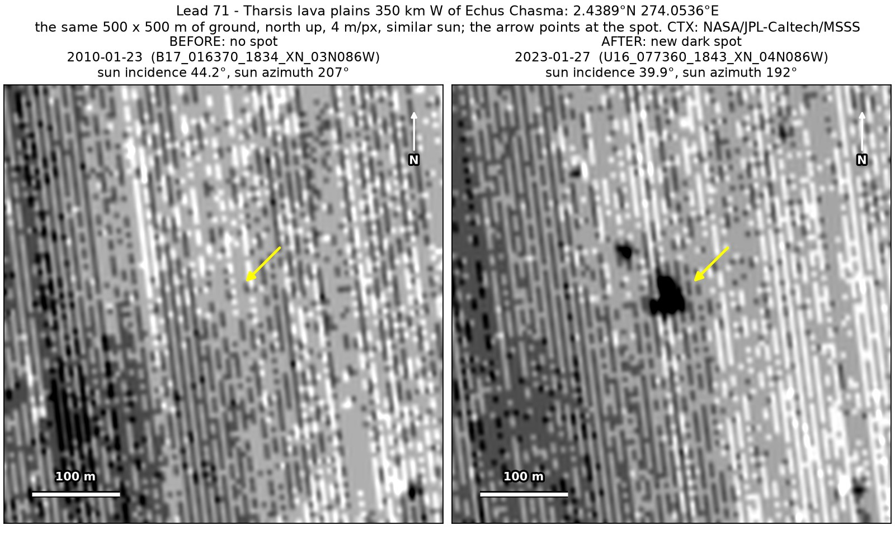
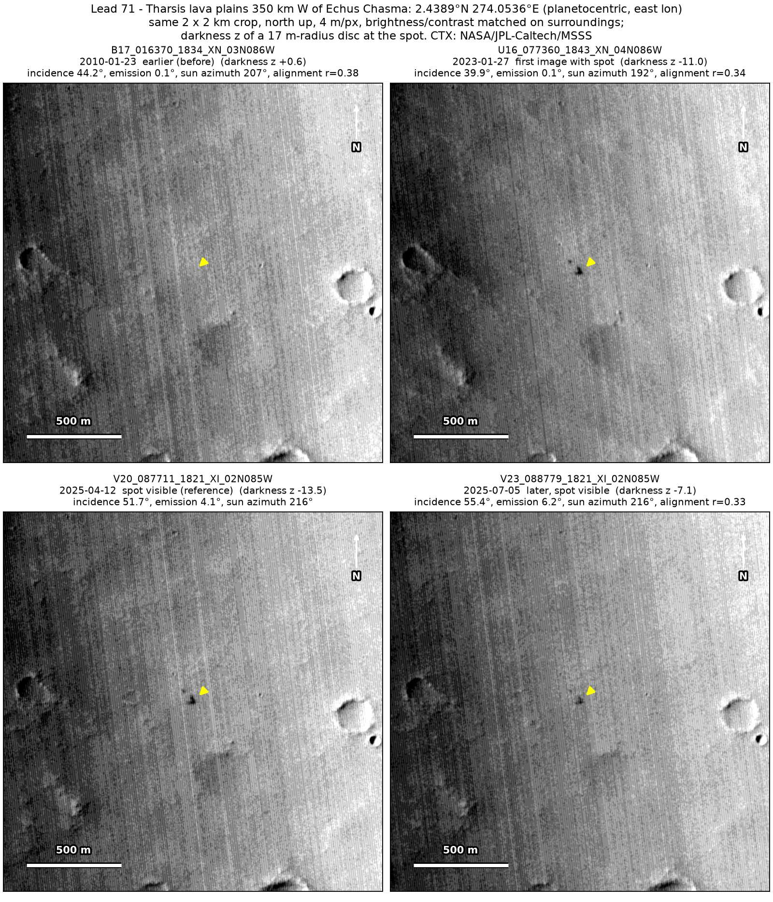
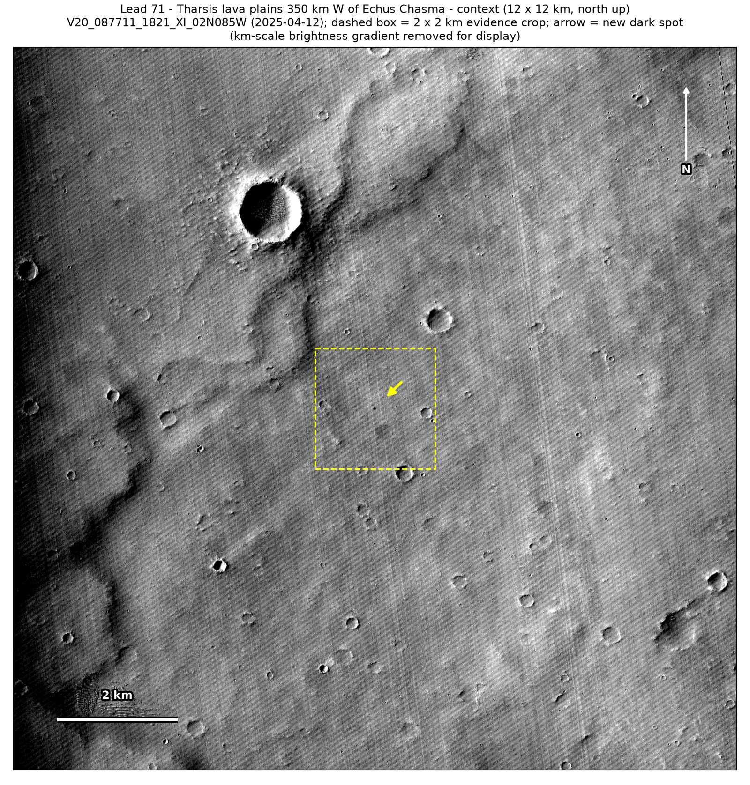
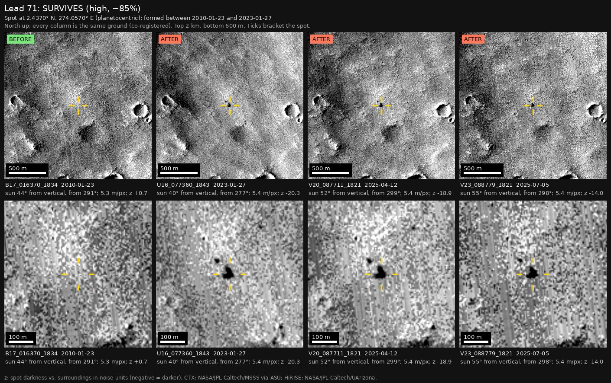

Professor of Mathematics
Paata Ivanisvili
Department of Mathematics, University of California, Irvine

← Possible new impact sites on Mars
Candidate 71: Tharsis lava plains 350 km west of Echus Chasma
Strong · roughly 90%

What changed. A compact, very dark spot about 33 m across, with a smaller dark dot about 70 m to its north-west, appeared on smooth Tharsis lava plains, between January 2010 and January 2023, and is still there in July 2025, in three CTX images from three orbits.
Why it may be a new impact. The only earlier image, from January 2010, was taken under a sun much like that of the January 2023 image and shows nothing there, while a dark feature 225 m to the south-west shows clearly in it, more clearly than in the later images. A round spot with no track, seen in the same place on three orbits and unchanged over two and a half years, is how the blast zone of a small new crater looks.
- Location
- 2.439° N, 274.054° E (85.946° W)
- Absent
- 23 January 2010
- Present
- 27 January 2023, 12 April 2025 and 5 July 2025
- Size
- Compact, very dark spot about 33 m across (34 × 42 m), with a smaller dark dot about 70 m to its north-west
- Confidence
- Strong candidate; roughly 90% that it is a new impact.
- Caveat
- Only one earlier image exists, so the window is 13 years long, and that image is noisy, although the dark feature nearby shows clearly in it. It lies outside every footprint of the high-resolution HiRISE camera; the nearest ends 11.0 km away. Like every candidate here, it is unconfirmed: see the caveat.


